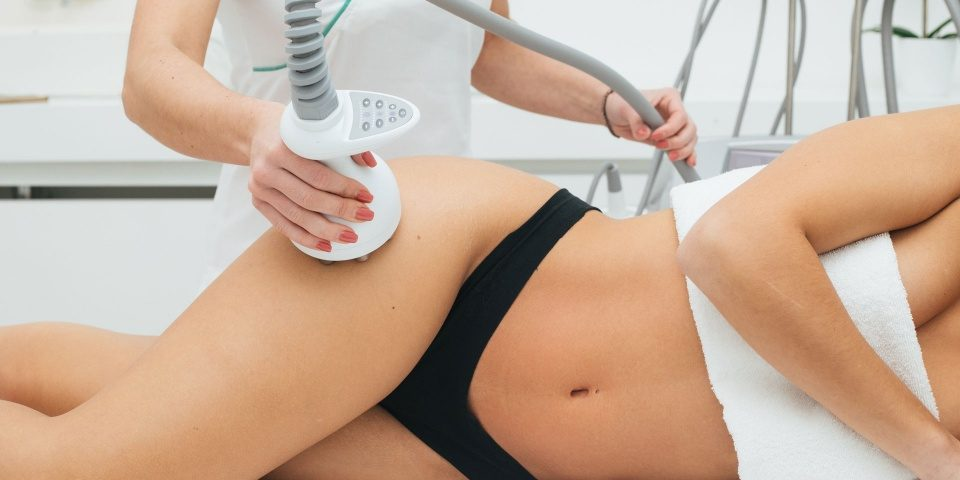
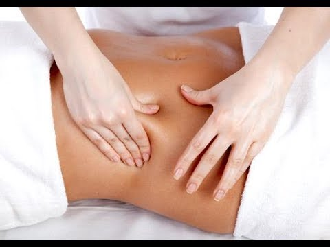
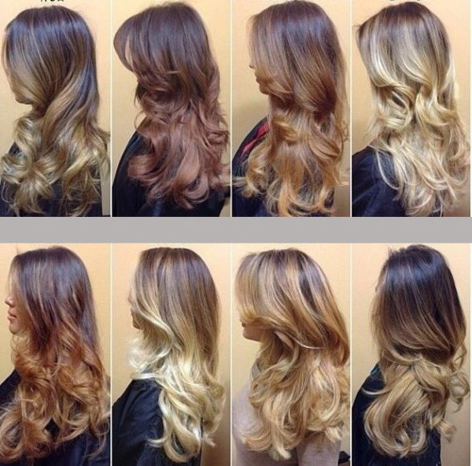
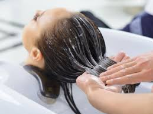

CARBOXITERAPIA

Tratamiento estético que consiste en la aplicación de inyecciones de gas carbónico por debajo de la piel para eliminar la celulitis, estrías, grasa localizada y la flacidez de la piel.
HIDROLIPOCLASIA
Tratamiento médico no quirúrgico que elimina grasa localizada mediante la aplicación de solución
fisiológica estéril.
MASAJE RELAJANTE
Terapia manual destinada a mejorar el bienestar de la persona ya que su máximo objetivo es aumentar la producción de endorfinas en nuestro cuerpo.
MASAJE REDUCTOR
Elimina la acumulación de grasa localizada y estiliza el contorno de la figura; es decir, crea una silueta más estética.
MASAJE POST-OPERATORIO

Después de realizarse una cirugía estética. Para una recuperación adecuada se debe realizar masajes post quirúrgicos que ayudan a mejorar el cuerpo.
TINTES PARA EL CABELLO
Procedimiento para cambiar el color del cabello. las razones usuales para querer cambiar el color se encuentran cubrir las canas o cabellos grises.
HIDRATACION CAPILAR
Tratamiento para mantener el cabello sano, con brillo, sedoso y suave. Sirve para reponer la humedad natural, los nutrientes y la queratina perdida del pelo.